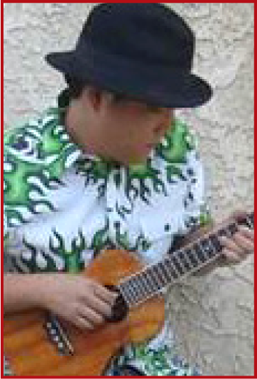

A special thanks to:

Pacific Islander's Health Awareness Brunch and New Hawaiian Civic Club
KVHCC Community Engagement Project
with support from the
OFFICE OF
HAWAIIAN AFFAIRS
 Native Hawaiian Community Assessment
Native Hawaiian Community Assessment
Read more about this important survey on the CONTACT page
Hawaiians and Hawaiians-at-heart
We want to hear from you!
Read more about this important survey on the CONTACT page


Carole Lanialoha Lee-Sumberg
Lanialoha Lee, a native Hawaiian born and raised in the Chicago area, and, third generation descendant of the first Polynesians who migrated to the Midwest.
My Grandmother, understanding the dearth of Pacific Island cultural and musical resources available in the Midwest, left Hawai`i and came to live with our family in Buffalo Grove to ensure the knowledge of our culture, hula, and music was not lost in our generation.
She structured my lessons of Hawaiiana in the ‘old way’ — spending an initial fifteen years instilling Hawaiian values within me, before passing on her knowledge she accumulated over a lifetime, to me, through oral traditions.
I simultaneously pursued academic music studies at Buffalo Grove High School, VanderCook College and the University of Southern Colorado, toward a music education degree.
After completing my academic studies, I pursued studies with master teachers of other pacific island cultural arts with an emphasis on repertoire. I toured as a performing artist in the venues these master teachers performed in, earning their respect and a place as their student.
My continuing work as a professional performing artist in forms of music and dance encompassed chanting, vocal work, instrumentation characteristic to both Western and Pacific Island cultural arts, and education.
It was ultimately the `ukulele that proved to best serve my musical mission of realigning the Western world’s perception of Pacific Island music. I’ve traveled nationally and internationally, educating audiences at `ukulele festivals, workshops, and concert performances. My work as an artist and advocate for the Pacific Island arts has been featured on NPR, WBEZ, Solid POI Radio, the Chicago Tribune, the Chicago Reader, Where Magazine, CAN TV, WTTW, KOCH-TV, and Chicago’s local broadcasting stations.
Throughout my sixteen year residence at the Old Town School of Folk Music, I’ve taught hundreds of `ukulele students, refining my curriculum and cultivating a new generation of musicians with a refined sensitivity to the culture bridging the Midwest to the islands through shared repertoire.
I continue to perform and teach, hopeful that an appreciation will develop and augment the cultural literacy of those unfamiliar with Pacific Island repertoire.
Daniel Ho
From his simple beginnings in Honolulu to his life amid the hustle and bustle of Los Angeles, Daniel Ho has worked over the years as a musician, producer, singer/songwriter, arranger, composer, engineer, and record company owner. The most compelling of these roles has been as a six-time GRAMMY Award winning producer, featured slack key guitarist, and artist in the "Best Hawaiian Music Album" category. Daniel’s musical inclinations were apparent at an early age. His first instruments were organ and `ukulele, from which he graduated to classical guitar, piano, electric guitar, bass, drums, and eventually, voice. His passion for music led him to study composing, arranging and film scoring at the Grove School of Music in Los Angeles. He began his professional career as the leader, keyboardist, composer, and producer for Kilauea, a contemporary jazz group he formed in 1990. By 1997, Kilauea had released six chart-topping albums, two of which hit the Top 10 on Billboard’s jazz charts. As momentum of the smooth-jazz genre waned, Daniel set his sights on starting an independent record label. His interests in photography and graphic design complimented the requisite responsibilities of marketing and production. In 1998, he launched Daniel Ho Creations. Slowly, the releases grew into collaborative projects that featured himeni (Hawaiian hymnody), hula, `ukulele, and slack key guitar.
To date, Daniel Ho Creations has released over eighty acoustic and Hawaiian-themed CDs by many of Hawai`i’s most respected artists, who are first and foremost friends. Daniel has received numerous Hawaiian music industry accolades including three Na Hoku Hanohano awards and fifteen Hawai`i Music Awards. In recent years, Daniel has been able to remain true to his craft and focus on what he loves most: the music. He is an accomplished singer and songwriter who has shared his music as a soloist throughout the U.S., Japan, Europe, Guam, and even Tasmania. He has been featured with the Honolulu Symphony; toured as a keyboardist and guitarist for GRAMMY Award-winning vocalist, Peabo Bryson; guest-lectured at Stanford University; and authored or co-authored nine music books. On a behind-thesilver- screen note, he performed the Hawaiian-language cover of Prince’s “Nothing Compares 2 U” which can be heard during the end credits of the 2008 feature film, “Forgetting Sarah Marshall”. Daniel is a YAMAHA guitar artist and plays KoAloha `ukuleles.
Darlene Ahuna
Darlene Ahuna is truly one of the most esteemed ambassadors of Hawaiian music. She is a multiple Na Hoku Hanohano Award-winning vocalist, best known for her seamless falsetto renditions of traditional Hawaiian, hula and hapa-haole standards. She conveys a moving and mesmerizing style that is all her own, influenced by the late-greats, who include Lena Machado and Genoa Keawe. She is a mainstay performer at the Merrie Monarch Festivals, has represented the Big Island of Hawai'i at venerable Hawaiian events in Japan, and has travelled across the United States and enchanted audiences with her uplifting personality and genuine sense of aloha.
Jason Arimoto
Originally from Hawaii, Los Angeles-based Jason Arimoto is a featured artist on a Na Hoku Hanohano Award winning album and is a two-time winner of the Ukulele Underground Award for Best Vocal Performance of the Year. He has attracted a following for his blues ukulele covers of Jimi Hendrix’s “Little Wing” and John Mayer’s “Gravity,” which was featured as one of Jake Shimabukuro’s top picks on the front page of YouTube in 2011. Jason’s original music blends his island roots with reggae and blues, with soulful vocals combining with a bluesy ukulele tone. Jason has performed across the U.S. including the Bean Blossom Blues Festival in Indiana and the world famous Viper Room in Hollywood, California as well as internationally at the Cairns Ukulele Festival in Australia.
In addition to his solo work, Jason is one of the original members of the Los Angeles based reggae/blues/rock band, JMD. Formed in 2008, JMD has attracted a loyal following for their inventive fusion of Bob Marley, Sublime, and Jimi Hendrix using three part harmonies and three instruments: an ukulele, bass and drums.
Kumu Sylvia Puananiha`aheo Edgar
Kumu Sylvia Puananiha`aheo Edgar has been a Kumu Hula since the age of 16 years old. Kumu Puanani was trained in hula in her early teens by Kahu Haina “Hienie” Kalehualaha`ole Blaisdell. Kahu Hienie and his halau, including Puanani, were the first halau in history, outside of the Hawaiian Islands, to participate in the Merrie Monarch Hula Competition back in April 1977. As an adult, to further her education in hula, she `uniki through Loea Kawaikapuokalani Hewett (April 2008). She has had her own award winning halau, Hula Halau O Puananiha`aheo, in Ventura, CA for 13 years; www.puanani.org. As a Kumu Hula she emphasizes the preservation of the Hawaiian culture through hula, `oli, music, and lei making.
Kumu Puanani is an active member of the Kumu Hula Association of Southern California, Kulia I Ka Punawai. She has recorded 3 CDs with Punawai and is a member of NARAS (National Academy of Recording Arts & Science). Kumu Puanani has also recorded her own solo chant album “Kahiko Hula 101” (cdbaby.com or iTunes). Kumu Puanani is extremely proud of her affiliation with 6 time Grammy winner Daniel Ho as his choreographer. She has choreographed signature piece hulas to Daniel's original music. Kumu Puanani was the choreographer of the hula “Aloha `Oe” in the Hawaiian Airlines music video with Grammy winner Tia Carrere. This video has been viewed over 460,000 times on YouTube.com.
Kumu Puanani had the great opportunity to work with movie composers Marco Beltrami & Buck Sanders on the Soul Surfer movie (2011) soundtrack. She was one of the Hawaiian vocal artists on the movie score.
Nani Edgar
Nani Edgar, daughter of Kumu Hula Sylvia Puananiha`aheo Edgar, is an exquisite hula dancer and a budding singer/ songwriter. Well versed in classic hula repertoire, Nani furthers the tradition by performing her mother's original choreographies of contemporary music. Her captivating hula and sweet voice add a refreshing touch to Grammy winner Daniel Ho's performances. Nani is the hula dancer in the “Aloha `Oe” Hawaiian Airlines music video with Grammy winner Tia Carrere.
Nani started her career at the age of 4 and became a Kumu Hula at the age of 14. She has participated in multiple hula competitions and performances. She has been an ukulele and guitar instructor for 8 years. Nani has recorded 3 CD's with Kulia I Ka Punawai and is a member of NARAS. She was an assistant engineer on the Grammy winning Hawaiian Album, “Masters of Hawaiian Slack Key Guitar, vol. 2”. Along with a multitude of other performances as a solo hula dancer, Nani has danced hula on the Grammy Museum, ASCAP, and the NAMM Show stages. Nani has toured with Daniel Ho throughout California, Chicago, and Hokkaido, Japan.
Nani had the great opportunity to work with movie composers Marco Beltrami & Buck Sanders on the Soul Surfer movie (2011) soundtrack. She was one of the Hawaiian vocal artists on the movie score.
Nani is currently a full-time third year History Major student at Cal State University Channel Islands.
Moeata Tehani
Moeata Tehani was born and raised in Hawai`i. As the daughter of Patrick Sylva, lead singer of the musical group, “The Surfers” and Roiti Tahauri, Master of Tahitian language, dance and culture, Moeata has spent a lifetime groomed by her constant surroundings of Polynesian entertainment.
Her path began raised under the guidance of talented parents since birth. A natural path that would lead her to continue her studies with renown Kumu Hula Maiki Aiu and John Lake. Since then Moeata has traveled throughout the United States as a professional entertainer touring with many productions and including the “Drums of Tahiti” in the launching of Sea World parks from coast to coast.
Throughout her travels includes the focused mentorship of her mother, Roiti Tahauri, as Moeata has gained great knowledge of Tahitian cultural art forms through oral traditions. Her travels to Tahiti at the side of her mother has afforded her the ability to hone in on her skills, achieve a deeper understanding of her heritage, and later become adjudicator for the San Jose Tahiti Fete upon her return to the states. Overtime Moeata has acquired excellent skills as a facilitator, workshop presenter, and clinician in a variety of settings and diverse audiences.
After choosing Orlando, Florida as her home, both Moeata and her mother founded the first “Heiva I Orlando” in 1995 in an effort to highlight Tahitian dance and music. Today, Moeata continues to perpetuate Tahitian culture through education and performances, with great admiration for her mother’s compassion and love for Tahitian culture. Moeata aspires to collectively seek knowledge so that she too may pass on these traditions to her children and for the benefit of future generations.
Teriieihira Tumahai
Teriieihira Tumahai was born in Makatea, Tahiti. He started leaning the art of Tahitian to`ere, Tahitian banjo, and other Tahitian instruments and music at the age of ten, under the direction of to`ere Master Iriti. In 1969 Terii went on to play with famed Tahitian groups Tiare Apetahi (Original Group) and Muna Nui (Tahiti Nui). At the age of 18, Terii was chosen to travel to the United States with a performing group of dancers and drummers from Tahiti. Terii came to BYU Hawaii to perform at the renowned Polynesian Cultural Center (PCC). During his tenure at the PCC, Terii created innovative beats that are used now as a standard international beats including the famed to`ere beat “HUTI HUTI.” Terii continued to perform with legendary groups including Tihati (1974-76) and Tavana (1976-1978) until Disney offered him the opportunity to go state side to perform at the Polynesian Resort in Orlando, FL (1979). As a professional musician, Terii continued to play countless major venues throughout his career including Maikai (1979-1980); Sea World Orlando, Ohio, and San Diego (1980-82); Mai Tiki Hotel (1983-1986); and Seven Seas Miami, FL (1987-90).
Terii continues to push the boundaries of Tahitian to`ere performance, musicianship and art. He is truly a pioneer of the traditional style of Tahitian to`ere and drumming.
Kūpa`a-Pacific Island Resources
Kūpa`a is a nonprofit organization dedicated to promoting Pacific Island cultural arts in education. These efforts are made accessible to the family and friends of Chicago’s Metropolitan and Northeastern regions of Illinois. Kupa`a nurtures the growth and development of the Midwest Asian Pacific Island communities, and has been reconnecting islanders and “Hawaiians at heart” with related cultural traditions and special events in the Midwest since 1995. Kūpa`a also recognizes the growing demand to provide more specialized on-going training programs of the Pacific Island cultural arts more focused on a solid foundation of basics and techniques of these various art forms, while emphasizing the instilling of Hawaiian values and traditions within each student to achieve the highest standard of excellence.
Copyright Information | Contact Us4544 N. Lincoln Ave | Chicago, Il
©2012 Festival of Aloha presented by Kupa'a, All Rights Reserved.